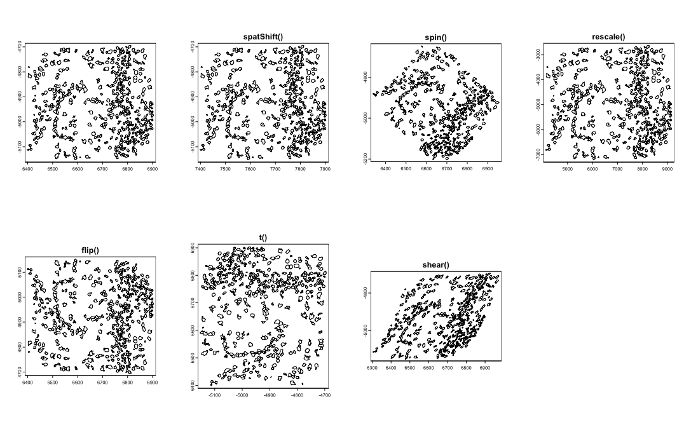
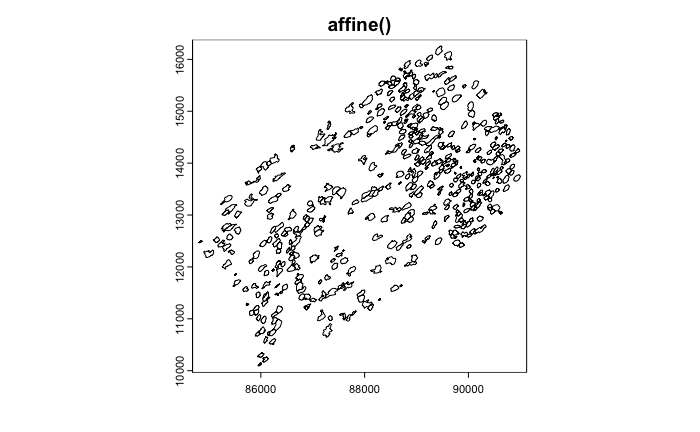

12 Spatial multi-modal analysis
Junxiang Xu
August 7th 2024
12.1 Overview
Spatial transformations of data will become more and more important in the near future due to the fact that performing spatial analyses across any two sections of tissue from the same block will require that data to be spatially aligned into a common coordinate space. Minute differences during the sectioning process from the cutting motion to how long an FFPE section was floated can result in even neighboring sections being distorted when compared side-by-side.
These differences make it difficult to assemble multislice and/or cross platform multimodal datasets into a cohesive 3D volume. The solution for this is to perform registration across either the dataset images or expression information. Based on the registration results, both the raster images and vector feature and polygon information can be aligned into a continuous whole.
Ideally this registration will be a free deformation based on sets of control points or a deformation matrix, however affine transforms already provide a good approximation. In either case, the transform or deformation applied must work in the same way across both raster and vector information.
Giotto provides spatial classes and methods for easy manipulation of data with 2D affine transformations. These functionalities are all available from GiottoClass.
12.1.1 Spatial transforms functions:
We support simple transformations and more complex affine transformations which can be used to combine and encode more than one simple transform.
spatShift()- translationsspin()- rotations (degrees)rescale()- scalingflip()- flip vertical or horizontal across arbitrary linest()- transposeshear()- shear transformaffine()- affine matrix transform
12.1.2 Spatial utilities:
Helpful functions for use alongside these spatial transforms are ext() for finding the spatial bounding box of where your data object is, crop() for cutting out a spatial region of the data, and plot() for terra/base plots of the data.
ext()- spatial extent or bounding boxcrop()- cut out a spatial region of the dataplot()- plot a spatial object
12.1.3 Spatial classes:
Giotto’s spatial subobjects respond to the above functions. The Giotto object itself can also be affine transformed.
spatLocsObj- xy centroidsspatialNetworkObj- spatial networks between centroidsgiottoPoints- xy feature point detectionsgiottoPolygon- spatial polygonsgiottoImage(mostly deprecated) - magick-based imagesgiottoLargeImage/giottoAffineImage- terra-based imagesaffine2d- affine matrix containergiotto- giotto analysis object
# load in data
library(Giotto)
g <- GiottoData::loadGiottoMini("vizgen")
activeSpatUnit(g) <- "aggregate"
gpoly <- getPolygonInfo(g, return_giottoPolygon = TRUE)
gimg <- getGiottoImage(g)# examples of the simple transforms using giottoPolygon
p <- par(no.readonly = TRUE)
par(mfrow=c(2,4))
plot(gpoly)
gpoly |> spatShift(dx = 1000) |> plot(main = "spatShift()")
gpoly |> spin(45) |> plot(main = "spin()")
gpoly |> rescale(10) |> plot(main = "rescale()")
gpoly |> flip(direction = "vertical") |> plot(main = "flip()")
gpoly |> t() |> plot(main = "t()")
gpoly |> shear(fx = 0.5) |> plot(main = "shear()")
par(p)
Giotto also provides a utility affine2d class that can be created from any affine matrix.
The affine2d can then be used to accumulate simple transforms that can be applied to spatial objects in a single step using affine()
# create affine2d
aff <- affine(diag(c(1,1)))
aff <- aff |>
spatShift(dx = 1000) |>
spin(45) |>
rescale(10) |>
flip(direction = "vertical") |>
t() |>
shear(fx = 0.5)
force(aff)<affine2d>
anchor : -180, 180, -90, 90 (xmin, xmax, ymin, ymax)
rotate : -0.785398163397448 (rad)
shear : 0.5, 0 (x, y)
scale : 10, 10 (x, y)
translate : 3.43401245619535e-13, 1000 (x, y)